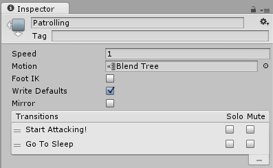

Animation transitions
Animation transitions allow the state machine to switch or blend from one animation state to another. Transitions define not only how long the blend between states should take, but also under what conditions they should activate. You can set up a transition to occur only when certain conditions are true. To set up these conditions, specify values of parameters in the Animator Controller.
For example, your character might have a "patrolling" state and a "sleeping" state. You could set the transition between patrolling and sleeping to occur only when an "alertness" parameter value drops below a certain level.

To give transitions a name, type it into the field as shown below:

The Inspector window of a state shows the transitions the state uses as shown below:

There can be only one transition active at any given time. However, the currently active transition can be interrupted by another transition if you have configured the settings to allow it (see Transition Interruption below).
Transition properties
To view properties for a transition, click on the transition line connecting two states in the Animator window. The properties appear in the Inspector window.

Use the following properties to adjust the transition and how it blends between the current and next state.
| Property | Function |
|---|---|
| Has Exit Time | Exit Time is a special transition that doesn’t rely on a parameter. Instead, it relies on the normalized time of the state. Check to make the transition happen at the specific time specified in Exit Time. |
| Settings | Fold-out menu containing detailed transition settings as below. |
| Exit Time | If Has Exit Time is checked, this value represents the exact time at which the transition can take effect. This is represented in normalized time (for example, an exit time of 0.75 means that on the first frame where 75% of the animation has played, the Exit Time condition is true). On the next frame, the condition is false. For looped animations, transitions with exit times smaller than 1 are evaluated every loop, so you can use this to time your transition with the proper timing in the animation every loop. Transitions with an Exit Time greater than 1 are evaluated only once, so they can be used to exit at a specific time after a fixed number of loops. For example, a transition with an exit time of 3.5 are evaluated once, after three and a half loops. |
| Fixed Duration | If the Fixed Duration box is checked, the transition time is interpreted in seconds. If the Fixed Duration box is not checked, the transition time is interpreted as a fraction of the normalized time of the source state. |
| Transition Duration | The duration of the transition, in normalized time or seconds depending on the Fixed Duration mode, relative to the current state’s duration. This is visualized in the transition graph as the portion between the two blue markers. |
| Transition Offset | The offset of the time to begin playing in the destination state which is transitioned to. For example, a value of 0.5 means the target state begins playing at 50% of the way through its own timeline. |
| Interruption Source | Use this to control the circumstances under which this transition may be interrupted (see Transition interruption below). |
| Ordered Interruption | Determines whether the current transition can be interrupted by other transitions independently of their order (see Transition interruption below). |
| Conditions | A transition can have a single condition, multiple conditions, or no conditions at all. If your transition has no conditions, the Unity Editor only considers the Exit Time, and the transition occurs when the exit time is reached. If your transition has one or more conditions, the conditions must all be met before the transition is triggered. A condition consists of: - An event parameter (the value considered in the condition). - A conditional predicate (if needed,for example, ‘less than’ or ‘greater than’ for floats). - A parameter value (if needed). If you have Has Exit Time selected for the transition and have one or more conditions, note that the Unity Editor considers whether the conditions are true after the Exit Time. This allows you to ensure that your transition occurs during a certain portion of the animation. |
Transition interruption
Use the Interruption Source and Ordered Interruption properties to control how your transition can be interrupted.
The interruption order works, conceptually, as if transitions are queued and then parsed for a valid transition from the first transition inserted to the last.
Interruption Source property
The transitions in AnyState are always added first in the queue, then other transitions are queued depending on the value of Interruption Source:
| Value | Function |
|---|---|
| None | Don’t add any more transitions. |
| Current State | Queue the transitions from the current state. |
| Next State | Queue the transitions from the next state. |
| Current State then Next State | Queue the transitions from the current state, then queue the ones from the next state. |
| Next State then Current State | Queue the transitions from the next state, then queue the ones from the current state. |
Note: This means that even with the Interruption Source set to None, transitions can be interrupted by one of the AnyState transitions.
Ordered Interruption property
The property Ordered Interruption changes how the queue is parsed.
Depending on its value, parsing the queue ends at a different moment as listed below.
| Value | Ends when |
|---|---|
| Checked | A valid transition or the current transition has been found. |
| Unchecked | A valid transition has been found. |
Only an AnyState transition can be interrupted by itself.
To learn more about transition interruptions, see the Unity blog post State Machine Transition Interruptions.
Transition graph
To manually adjust the settings listed above, you can either enter numbers directly into the fields or use the transition graph. The transition graph modifies the values above when the visual elements are manipulated.

Change the transition properties in the graph view using the following directions::
- Drag the Duration "out" marker to change the Duration of the transition.
- Drag the Duration "in" marker to change the duration of the transition and the Exit Time.
- Drag the target state to adjust the Transition Offset.
- Drag the preview playback marker to scrub through the animation blend in the preview window at the bottom of the Inspector.
Transitions between Blend Tree states
If either the current or next state belonging to this transition is a Blend Tree state, the Blend Tree parameters appear in the Inspector. Adjust these values to preview how your transition would look with the Blend Tree values set to different configurations. If your Blend Tree contains clips of differing lengths, you should test what your transition looks like when showing both the short clip and the long clip. Adjusting these values does not affect how the transition behaves at runtime; they are solely for helping you preview how the transition could look in different situations.

Conditions
A transition can have a single condition, multiple conditions, or no conditions at all. If your transition has no conditions, the Unity Editor only considers the Exit Time, and the transition occurs when the exit time is reached. If your transition has one or more conditions, the conditions must all be met before the transition is triggered.
A condition consists of:
- An event parameter, the value of which is considered in the condition.
- A conditional predicate, if needed (for example, less or greater for floats).
- A parameter value, if needed.
If Has Exit Time is enabled for the transition and has one or more conditions, these conditions are only checked after the exit time of the state. This allows you to ensure that your transition only occurs during a certain portion of the animation.